Eclipse cheat sheets to DITA to PDF
I worked on the open source Java based project Debrief the leading maritime analysis tool which is also on GitHub at https://github.com/debrief/debrief. This project aims to be a easy to follow tutorial on all the technologies listed and the code is based on some parts of the document publishing that I did in the Debrief project. The glossary of links at the bottom of this README describe the technologies being used.
Jump ahead to the various sections in this README.md by using the links below:
The original project just created one highly customized PDF and there are a couple of example PDFs that can be seen in the root of this repository. Recently I added support for other output formats that are not customized including HTMLHelp, TocJS and XHTML.
This program runs inside Eclipse, an integrated development environment (IDE) and is mainly a Java based project in that all the code libraries use Java (Apache FOP, Saxon, DITA Open Toolkit, Apache ANT, Eclipse) and it also uses XSL and XML heavily. Using Eclipse allows us to create a publishing pipeline creating all the working output formats one after the other, in one click by building the project. Development was originally done in oXygen XML Editor then ported to Eclipse.
The roadmap for this project is to keep the "info.debrief" custom DITA-OT plugin up to date with the latest current version of DITA-OT, in depth instructions on how to get up and running inside Eclipse and lots more.
When built and run this project takes a set of Eclipse cheat sheets and transforms them to PDF. Eclipse cheat sheets are obviously best viewed inside Eclipse. Using PDF allows us to print nicely formatted cheat sheets on paper which allows the user to work through the cheat sheets with a pen and check off each item as they go. Using cheat sheets physically on paper was seen as a new way to learn and was the original concept of the Debrief cheat sheets publishing project I worked on.
Darwin Information Typing Architecture (DITA) is an XML data model for authoring and using DITA-OT you can publish those ideas. The DITA standard is maintained by the OASIS DITA Technical Committee. Some of the largest and most successful companies in the world use DITA. The next link is an informal list of companies using DITA
It's a two-step process first the DITA XML is created from the Eclipse cheat sheets (XML files) and then you use the DITA-Open Toolkit to create the PDF from the auto created DITA files.
The two parts of the transformation and rendering comprise of:
-
- This is the transformation step and it uses cheatsheet-to-dita.xsl which requires an XSLT 2.0 compliant processor.
- I used the open source product Saxon from Saxonica which came included with the DITA-OT 2.2.1 library.
- This file takes as input a collection on XML files (Eclipse cheat sheets) and creates multiple output files - a parent DITA Map and some associated tasks.
- The "output/debrief" and sub "dita" folder contains the dynamically created (transformed) DITA files from this step.
-
- This is the rendering (printing) step and the 'info.debrief' custom DITA-OT plugin produces the PDF via the DITA-OT base libraries and a XSL - Formatting Objects Processor (FO Processor)
- The "output/debrief/pdf" folder contains the resulting PDF output from this step
- I used Apache FOP 2.1 for the FO Processor
If you are not already Gung-Ho on Java and all things tech, then try a few short online courses:
- https://www.codecademy.com/learn/learn-java
- https://www.codecademy.com/learn/learn-the-command-line
- https://www.codeschool.com/courses/try-git
- https://www.codecademy.com/learn/learn-git
And then come train in the REAL DOJO and reach your highest potential, become faster, stronger and more powerful......JEDI MASTER LEVEL.....!??!?!!
Yo let's build...watch the Star Wars build run on Youtube....BrisVegas Jedi Master Style...
See the build run full screen in 1080p
Build Instructions
The project was originally developed on OS X and the documentation below lists the instructions on how to set up and build the project for OS X.
The Windows build instructions for this project will be soon on this repositories wiki.
Build Instructions Mac OS X
Install Git
On OS X, open your Applications folder, then open the Utilities folder. Open the Terminal application.
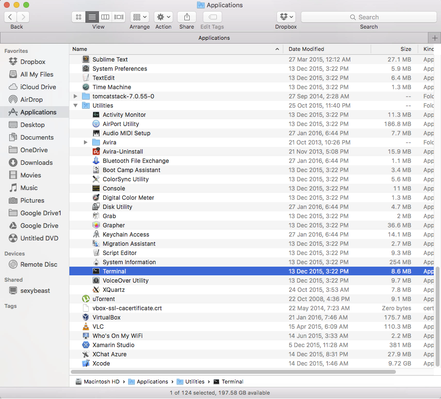
In the terminal type:
git --help
This will either print the usage of the git command if git is already installed, or trigger the Command Line Tools (OS X) for Xcode to install.
After the Command Line Tools are installed go back to the terminal and type:
man git
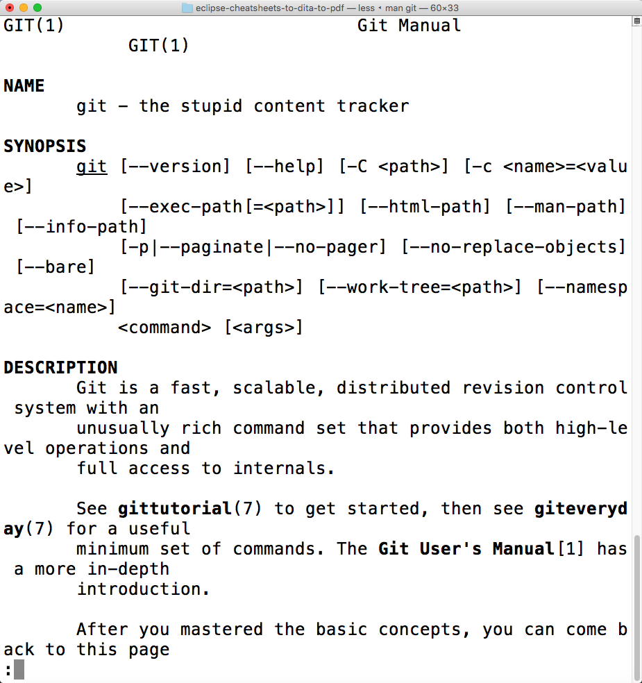
Use the up and down arrows to navigate through the man page and press 'q' to quit.
Another essential git command is:
git status
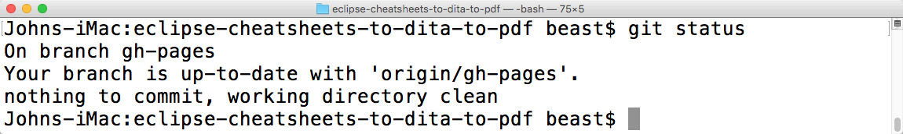
Install Java
First you should check if Java is already installed on your system.
In a terminal type the following commands:
java -h
If Java is not installed you need to install the Java Development Kit (JDK) as Eclipse needs Java to run so you should first read the Java Platform, Standard Edition Installation Guide
So then go to: http://www.oracle.com/technetwork/java/javase/downloads/jdk8-downloads-2133151.html
Choose the JDK version for your Operating System.
If it's installed you can read up about Java more by typing:
java -version
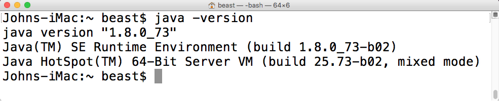
man java
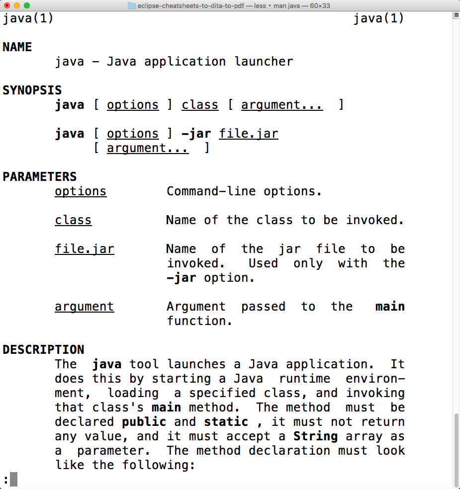
Install Eclipse
Go to: Eclipse Downloads

In the box near top labelled "Try the Eclipse Installer", click on "64 bit" under "Mac OS X".
Download Eclipse installer application.
You should check the checksum of the Eclipse file you download.
Depending on which type of checksum you choose: MD5, SHA1, SHA-512 the commands are slightly different:
First you should click on the checksum type in the image below:
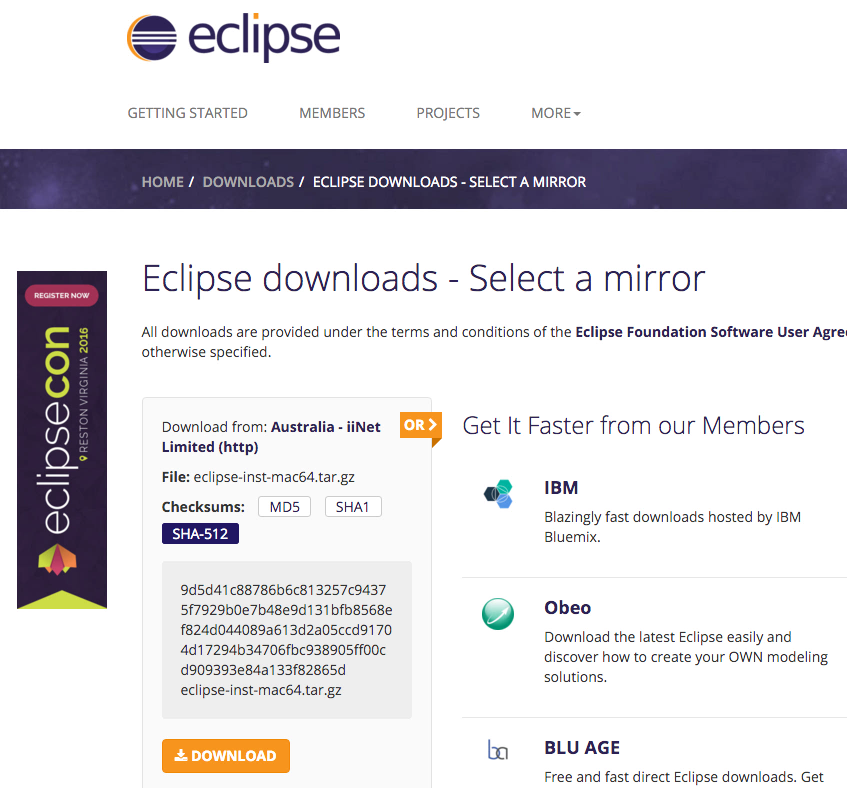
I used SHA-512 so in a terminal in the directory or folder where you downloaded the Eclipse package to, the command to type would be:
shasum -a 512 eclipse-inst-mac64.tar.gz
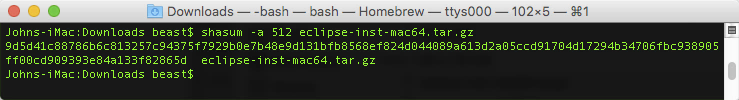
You should check the output of the shasum command matches what's displayed on the Eclipse website for the type of checksum you choose. You can select the text in the terminal, copy it and then find it on the Eclipse website.
For more information on the shasum or md5 command open a terminal and type:
man shasum

man md5
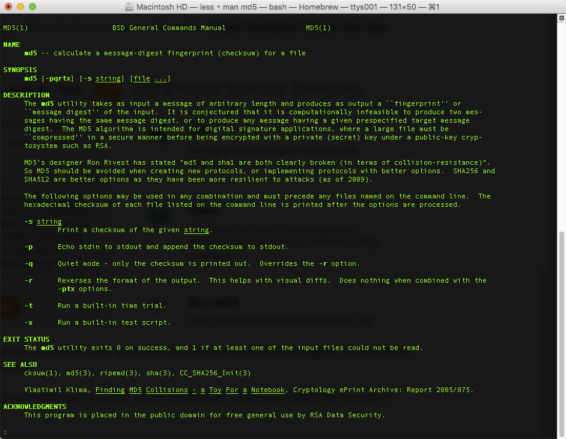
Use the up and down arrows on the keyboard to navigate through the man page documentation.
To exit from the man pages type: q
Unzip resulting download (eclipse-inst-mac64.tar.gz) by double-clicking on it if downloader did not already unzip it.
Run "Eclipse Installer" application.
Choose "Eclipse IDE for Java Developers" option. (Other options and Eclipse modules are not necessary for this build.)
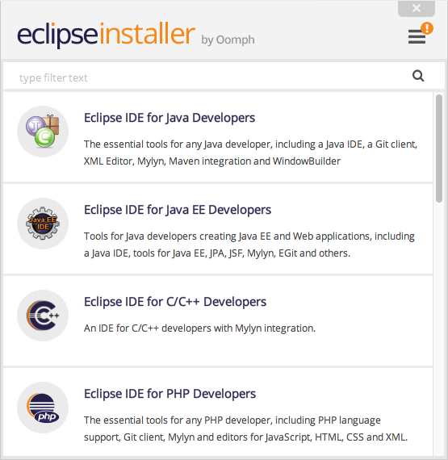
This option allows you to specify an "Installation Folder." The default option may be a folder within your individual directory.
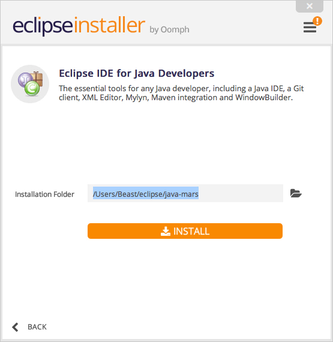
It will be more useful to change this and install Eclipse within a directory titled "Eclipse" within the system's main Application directory.
Click on the folder icon to navigate to the Applications directory and create an "Eclipse" target sub-directory before installing.
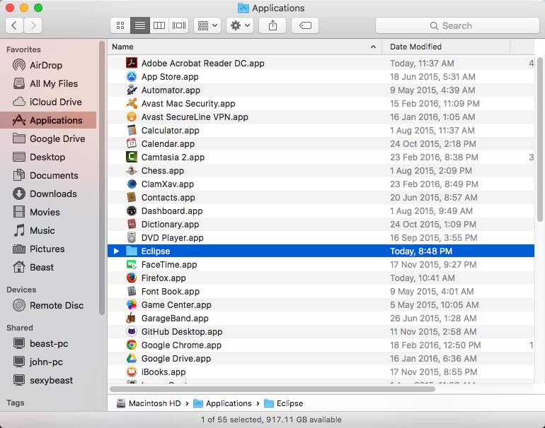
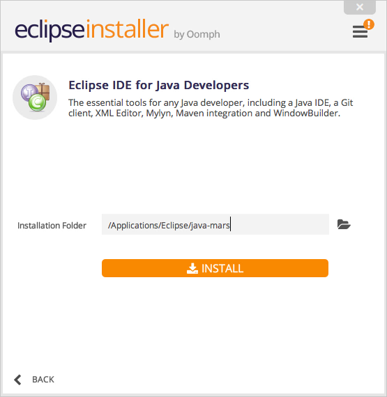
Then click the "Install" button.
You will be presented with the Eclipse Foundation Software User Agreement, so click "Accept Now" after reading it.
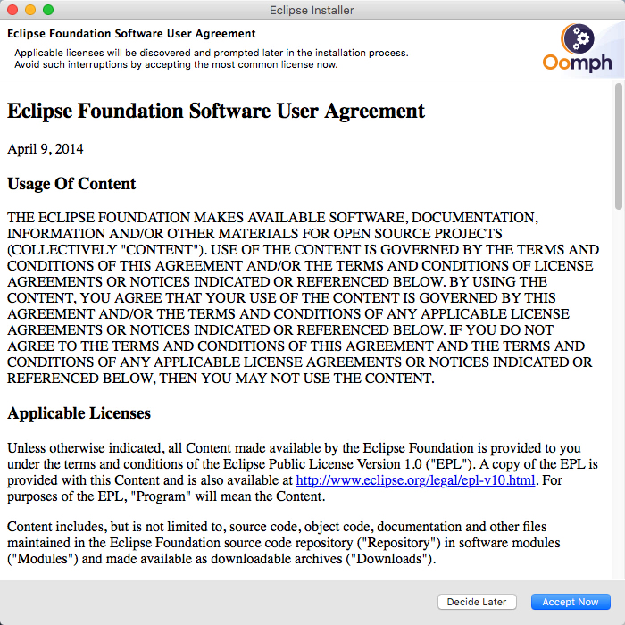
The installation process may take a few minutes and you will be presented with a green "installing" loading bar style indicator.
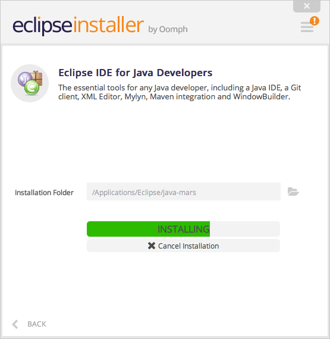
When Eclipse has finished installing you will be presented with the "Launch" green button.
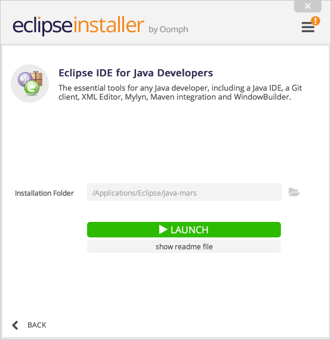
Launch Eclipse for the first time. Doing so will ask you to Select a "workspace." The default option "/Users/[your username]/Documents/workspace" will work fine.
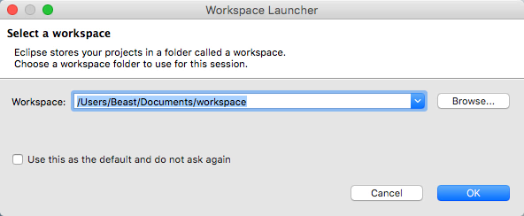
Quit Eclipse for now.
Install GitHub Desktop
The build's repository is found within GitHub, and the "GitHub Desktop for Mac" application will allow you to clone and work on the build more easily, while retaining a link to the primary source, and thus obtaining updates and having the option to submit modifications which could be candidates for inclusion. GitHub Desktop is currently available for both OS X and Windows.
Go to: GitHub Desktop
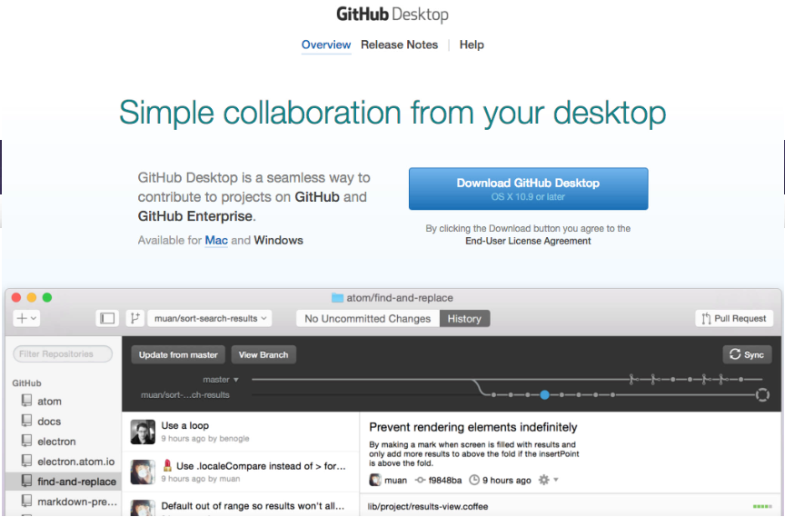
Click on the "Download GitHub Desktop" button.
Unzip the resulting file: GitHub Desktop 216.zip
This expands to: GitHub Desktop
Move this to your system's Applications directory.

Clone the project to your desktop computer
Go to the GitHub repository for this project:
https://github.com/jbampton/eclipse-cheatsheets-to-dita-to-pdf
Click on the icon just to left of "Download ZIP" that when you hover your mouse over it, it will display "Save jbampton/eclipse-cheatsheets-to-dita-to-pdf to your computer and use in GitHub Desktop"

You will be presented with a dialog box that will ask if you want to open the link with GitHub Desktop. The dialog box will look different depending on which web browser you are using. Below is how the dialog boxes look like:
Google Chrome
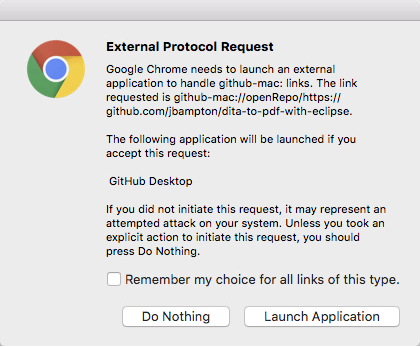
You will need to click launch application.
Firefox
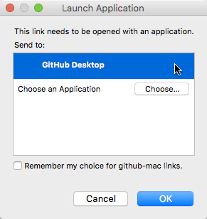
You will need to select "GitHub Desktop" then click "OK"
In the "Clone As:" dialog box, accept the default option, which is to create a clone with the same name as the original: eclipse-cheatsheets-to-dita-to-pdf
Click the "Clone" button.
You will see a progress bar indicating the progress of files being downloaded from GitHub onto your desktop computer, into a local repository directory.
Quit GitHub Desktop.
Install Homebrew and Apache Ant
The project uses Homebrew and I installed Apache Ant inside Homebrew with the Ant Homebrew formula. Towards the bottom of this README.md there is some information on Homebrew usage.
Import project into Eclipse
Launch Eclipse.
In menu bar, choose: File > Import
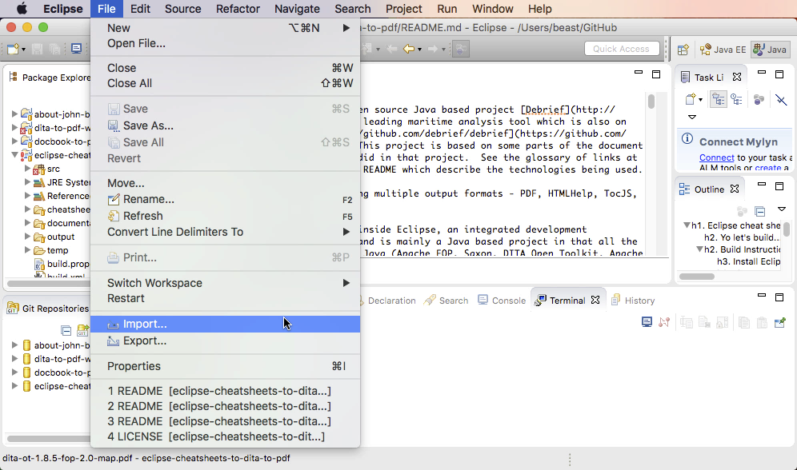
Then > General > Existing Projects into Workspace -> click "Next"
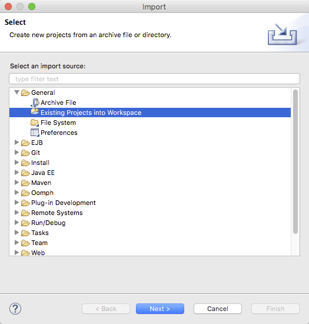
You will be presented with the next dialog

Click "Browse" next to "Select root directory"
Navigate to the "eclipse-cheatsheets-to-dita-to-pdf" project, which (by default) should be within the "Users/[your user name]/GitHub" directory (or wherever you put it when you cloned it to your desktop).

This will bring the project into Eclipse.
If you have not already done so, click on the "Workspace" button so that you can view the project.
You must add the JAR files from SaxonHE and DITA-OT to Ant inside Eclipse.
Go to Eclipse -> Preferences

Then -> Ant -> Runtime -> Classpath tab -> click "Global Entries"

Then -> click "Add JARs" - you will be presented with the next dialog

Then-> expand 'eclipse-cheatsheets-to-dita-to-pdf' and navigate to "src/libs/dita-ot-2.2.1/lib" and add all the JAR files from that directory. Make sure to click "Apply" and then click "Ok".
Right click on build.xml and select -> Run As -> Ant Build -> (first one)
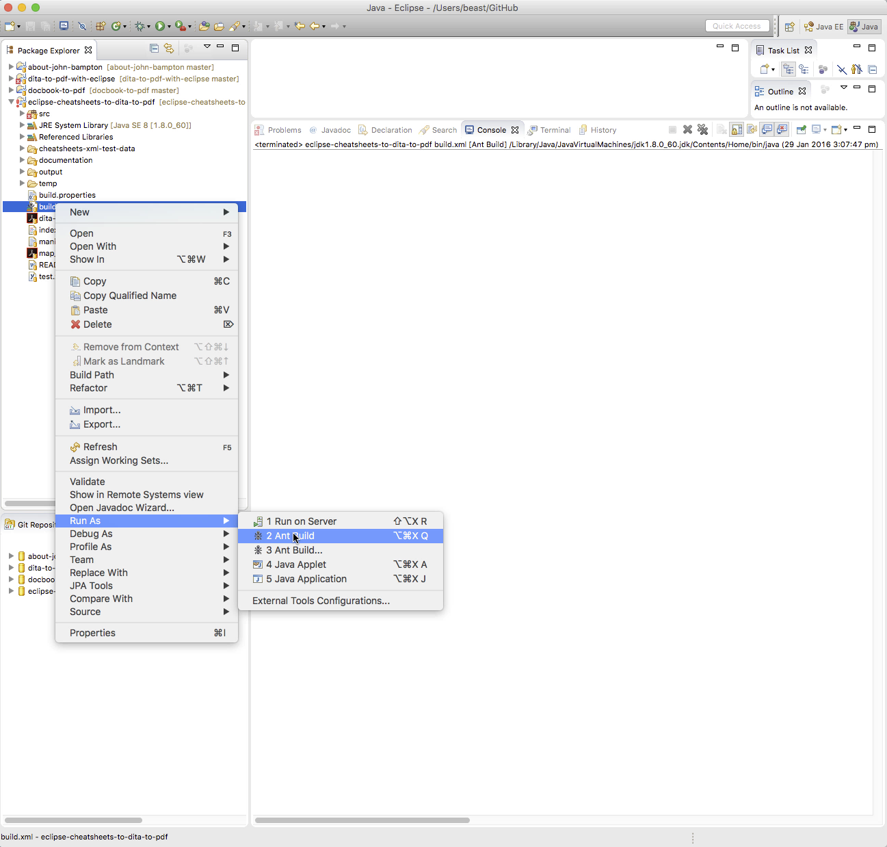
This should run and build all tasks, creating all working output formats in one go.
This process re-creates the DITA XML output in the "output" directory. There should be five DITA files, one parent Ditamap at and 4 task files with the Ditamap at the root of the "output/debrief" folder with task files together in the sub folder "dita"
The final resulting PDF should be called map.pdf and located in the "pdf" folder.
There are currently 4 other output formats (Docbook, HTMLHelp, TocJS, XHTML) as seen by the names of the folders in the "output/debrief" directory. The PDF output is vastly superior to the others which have no customization. The Docbook output is a work in progress.
If you want to choose which output formats to render, you can right click on "build.xml" and select -> Run As -> Ant Build -> (second one).
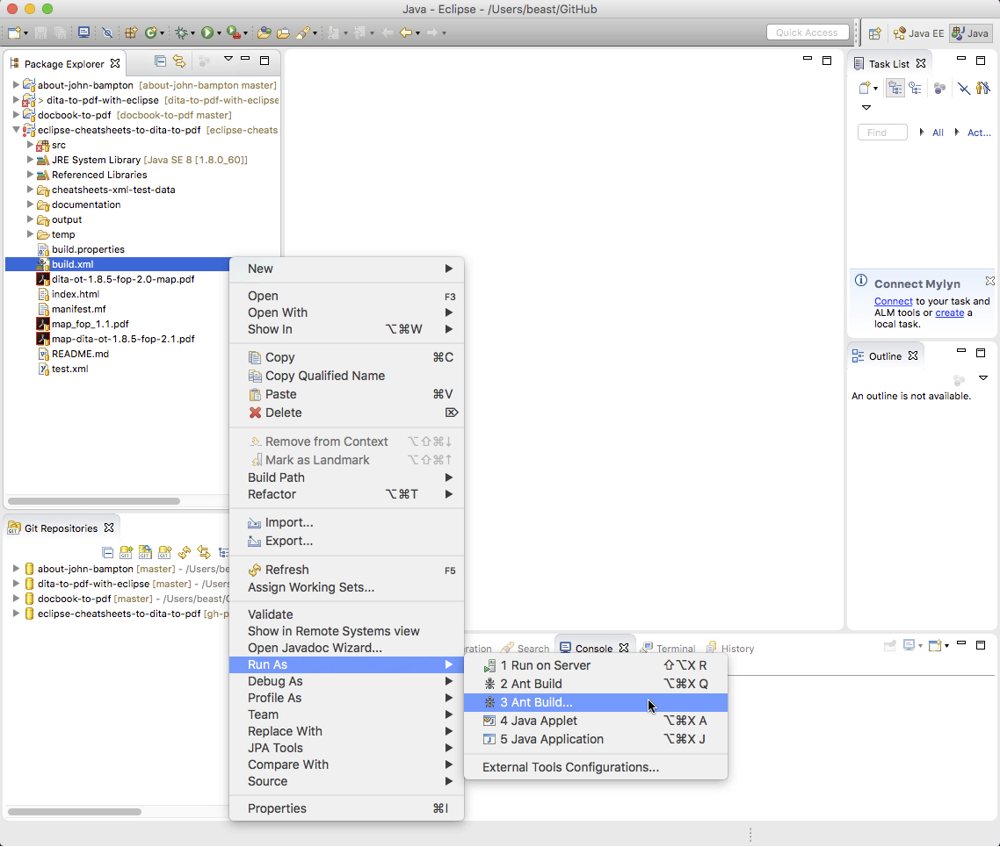
Then select which output format you would like on the "Targets" tab under "Check targets to execute".
The base target is "xslt2", this creates the DITA-XML files from the input Eclipse cheat sheets (XML). You must have the "xslt2" target checked if you are running any other targets other than "TransformALL"
Finally click "Run".
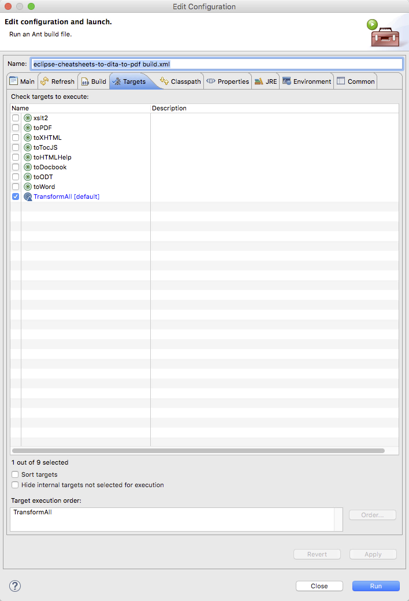
How DITA-OT PDF Plugins work
Plugins are placed in the DITA-OT plugins directory. You can see the plugin I built in this directory named "info.debrief".

When ready a plugin must be integrated into DITA-OT using Apache Ant. I built this project using OS X and I installed Ant through Homebrew.
On the command line from inside the root DITA-OT folder it would be -> ant -f integrator.xml
You can also run the integrator inside Eclipse as an Ant build by right clicking on "src/libs/DITA-OT1.8.5/integrator.xml" and selecting -> Run As -> Ant Build (first one) and this should integrate the plugin with the toolkit.

Every DITA-OT PDF plugin has a file name plugin.xml at its root where you set the configuration values. The plugin id must match the folder name of the plugin. Every plugin has a "transtype" -> this plugins transtype is "debrief". You can see the plugin.xml file and where to set the plugin id and transtype in the next image:

PDF Plugins are comprised of some XML config files, some artwork and some custom XSL (XSLT/XSL-FO/XPath) code DITA-OT provides that base XSL code that you 'override' with your custom work.
The two main files that configure plugins are plugin.xml and integrator.xml which should be in the root of the plugin folder. The "cfg" folder contains the rest of the customization.
Custom XSL can be placed in two XSL files both named "custom.xsl". I placed all the custom code at "src/libs/DITA-OT1.8.5/plugins/info.debrief/cfg/fo/xsl/custom.xsl" for this project. The other file is seen in the adjacent "attrs" directory.
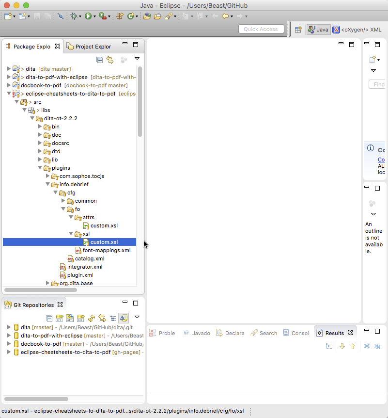
Placing the custom code only in these two files follows best practice techniques on how to build a DITA-OT PDF plugin.
Homebrew usage
Homebrew is an amazing package management system for OS X that installs the stuff you need that Apple didn't.
Homebrew Formula are written in Ruby.
A made a video on Homebrew which runs for under minute that shows the typical brew update command.
If you install Homebrew you should try to run brew update daily.
Once you have installed Homebrew you can run through the basic commands below.
Open a terminal and type:
brew -v
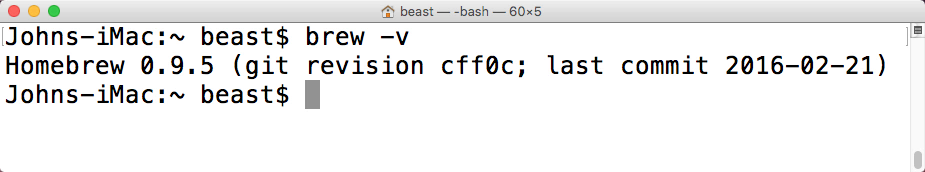
man brew
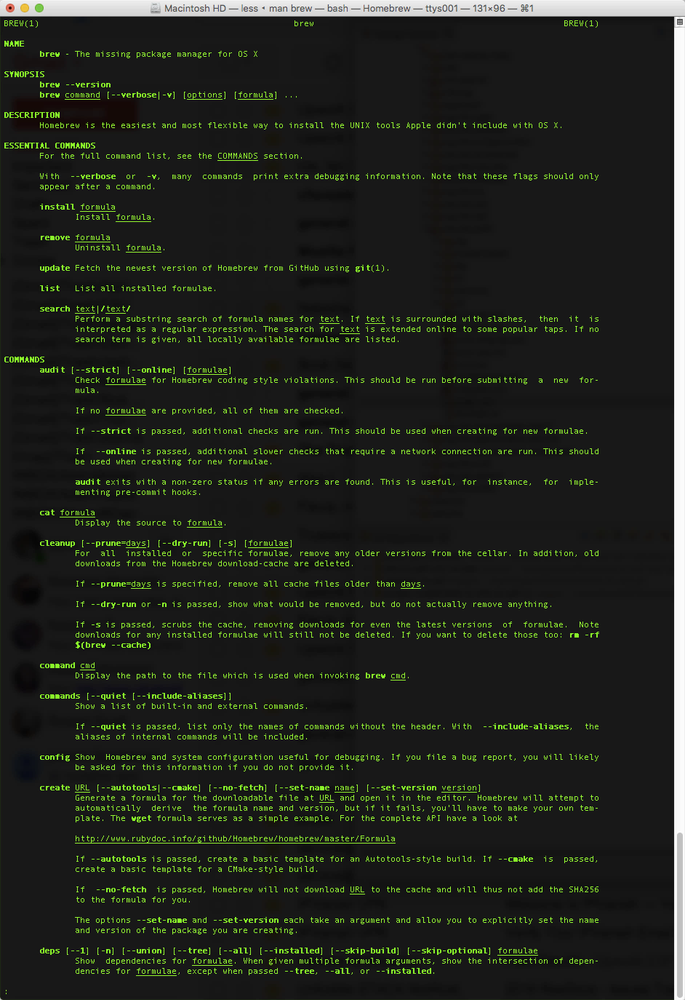
Before using Homebrew you should ensure it's up to date. Run the next command:
brew doctor

brew update
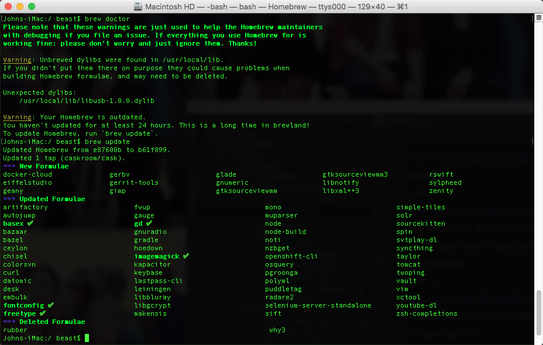
Example output of running a brew install command. The image shows pouring brews from their bottles
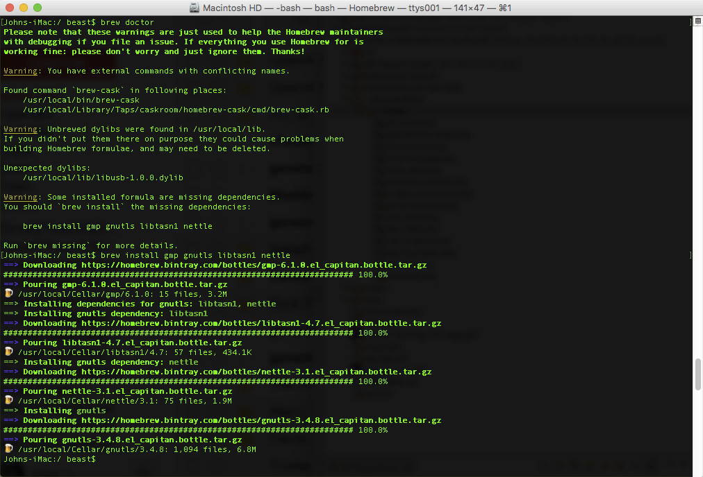
brew list

List of resources and technologies used on this GitHub project
Eclipse - https://eclipse.org/
Eclipse cheat sheets - http://help.eclipse.org/mars/index.jsp?topic=%2Forg.eclipse.platform.doc.user%2Freference%2Fref-cheatsheets.htm
The Apache Software Foundation - http://www.apache.org/
Apache FOP - https://xmlgraphics.apache.org/fop/
Apache ANT - http://ant.apache.org
Saxon XSLT - https://en.wikipedia.org/wiki/Saxon_XSLT
Saxon - http://saxon.sourceforge.net/
Saxonica - http://www.saxonica.com/welcome/welcome.xml
Online community for the Darwin Information Typing Architecture OASIS Standard - http://dita.xml.org/
DITA - https://en.wikipedia.org/wiki/Darwin_Information_Typing_Architecture
DITA-Open Toolkit - http://www.dita-ot.org/
W3C - The Extensible Stylesheet Language Family (XSL) - http://www.w3.org/Style/XSL/
W3C XSLT 2.0 - http://www.w3.org/TR/xslt20/
XSL Formatting Objects - https://en.wikipedia.org/wiki/XSL_Formatting_Objects
XSL-FO Processors - http://www.w3.org/community/ppl/wiki/XSL-FO_Processors
XML - https://en.wikipedia.org/wiki/XML
Adobe PDF - https://en.wikipedia.org/wiki/Portable_Document_Format
Adobe Acrobat Reader DC - https://get.adobe.com/reader/
XHTML - https://en.wikipedia.org/wiki/XHTML
Dublin Core Metadata Initiative - http://dublincore.org/
Microsoft HTML Help 1.4 - https://msdn.microsoft.com/en-us/library/windows/desktop/ms670169(v=vs.85).aspx
The Organization for the Advancement of Structured Information Standards (OASIS) - https://en.wikipedia.org/wiki/OASIS_(organization)
oXygen XML Editor - http://www.oxygenxml.com
DITA to TocJS - http://www.dita-ot.org/1.8/readme/dita2tocjs.html
DITA-OT installing plugins - http://dita-ot.sourceforge.net/1.7/dev_ref/plugins-installing.html
Generate sample DITA-OT plugin - https://dita-generator-hrd.appspot.com/pdf-plugin/
Creating DITA-OT plugins - http://dita-ot.sourceforge.net/1.5.4/dev_ref/plugins-overview.html
Customizing PDF output - http://www.dita-ot.org/1.8/readme/dita2pdf-customization.html
XSLT FAQ. Docbook FAQ. Braille. - http://www.dpawson.co.uk/
Homebrew — The missing package manager for OS X - http://brew.sh/
Install Ant with Homebrew - http://brewformulas.org/Ant
Installing Apache Ant - http://ant.apache.org/manual/install.html
Codecademy - Learn the Command Line - https://www.codecademy.com/courses/learn-the-command-line
Codecademy - Learn Java - https://www.codecademy.com/learn/learn-java
Got 15 minutes and want to learn Git? https://try.github.io/levels/1/challenges/1
Ruby regular expression editor - http://rubular.com/
Essential programmer training - http://www.codewars.com/
Mastering Markdown - https://guides.github.com/features/mastering-markdown/
GitHub Desktop - https://desktop.github.com/
Microsoft File Checksum Integrity Verifier - https://www.microsoft.com/en-au/download/details.aspx?id=11533
TechSmith Camtasia - https://www.techsmith.com/camtasia.html
MD5 - https://en.wikipedia.org/wiki/MD5
sha1sum - https://en.wikipedia.org/wiki/Sha1sum
IDE - Integrated Development Environment - https://en.wikipedia.org/wiki/Integrated_development_environment
Git (software) - https://en.wikipedia.org/wiki/Git_(software)
man page - https://en.wikipedia.org/wiki/Man_page
Terminal (OS X) - https://en.wikipedia.org/wiki/Terminal_(OS_X)
Contributions
Fork and pull request. Simple.